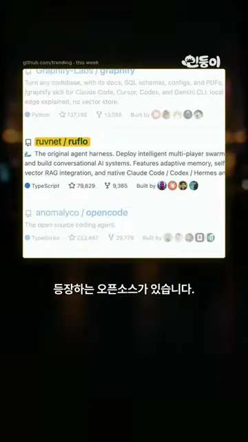
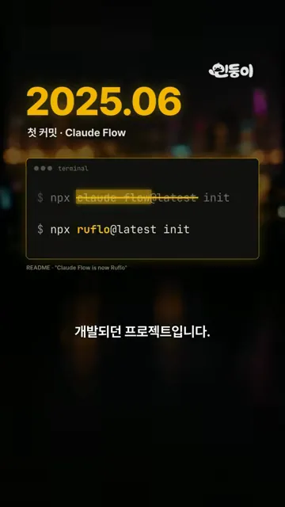
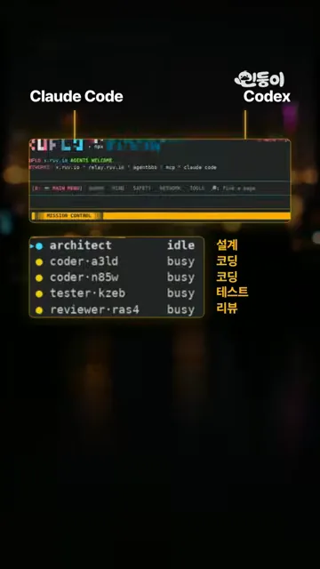
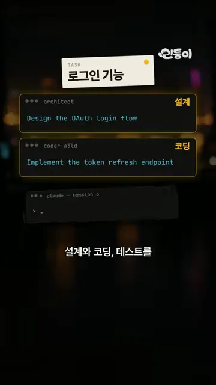
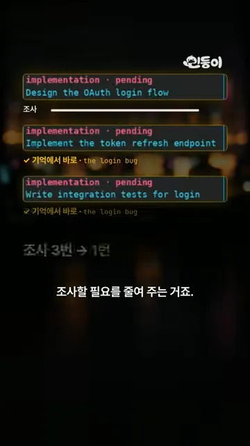
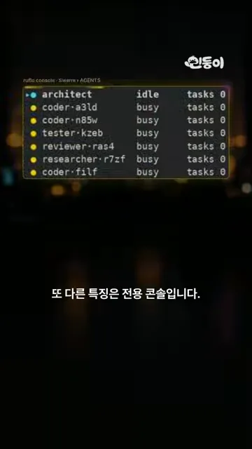
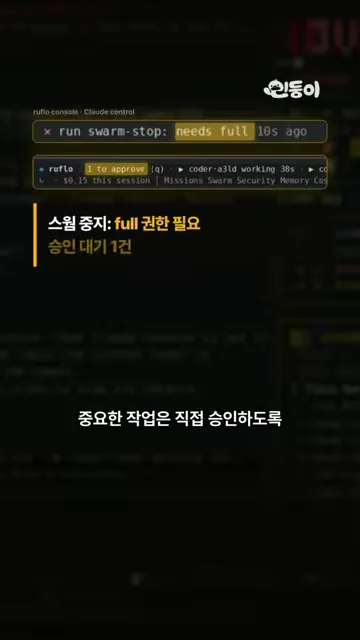
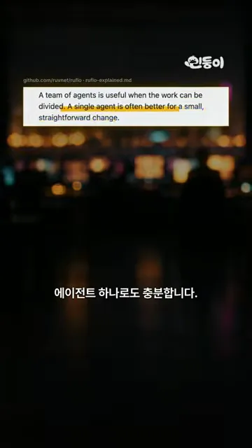

Ruflo는 AI 여러 개를 팀으로 묶어요
영상은 GitHub 트렌딩 화면으로 시작해요. 가운데 노란 칸으로 강조된 저장소가 ruvnet/ruflo예요. 설명 줄에 Claude Code와 Codex가 보이고, 아래 별 수는 79,829개예요.

Ruflo는 새 프로젝트가 아니에요. 2025년 6월 첫 커밋 때 이름은 Claude Flow였어요. 화면의 터미널에서 줄이 그어진 claude-flow@latest 아래에 새 명령 ruflo@latest가 있어요. 이름만 바뀌고 설치 방식은 그대로 npx … init이에요.

여러 개를 띄우는 것과 팀으로 굴리는 것
Ruflo는 Claude Code나 Codex에 연결해서 써요. 아래 화면 오른쪽 목록을 보면 에이전트마다 역할이 붙어 있어요. architect는 설계, coder 둘은 코딩, tester는 테스트, reviewer는 리뷰예요. architect만 idle이고 나머지는 busy예요.

영상은 단순히 AI를 여러 개 동시에 실행하는 것과는 다르다고 짚어요. 터미널 세션 세 개를 나란히 띄우면 서로 무슨 일을 하는지 몰라요. Ruflo는 하나의 일을 쪼개서 나눠 주고 전체를 조율해요. 예로 든 건 로그인 기능이에요. 'TASK 로그인 기능' 카드 아래 architect 칸에는 OAuth 로그인 흐름 설계가, coder 칸에는 토큰 갱신 엔드포인트 구현이 들어가 있어요.

지난 작업을 기억해요
Ruflo에는 기억 기능도 있어요. 이전에 어떤 문제를 풀었고 어떤 방식이 효과적이었는지 저장해 뒀다가, 다음 작업에서 꺼내 봐요. 영상은 'jwt 갱신, 그 로그인 버그'를 메모리에서 찾는 장면으로 이걸 보여 줘요.
아래 화면에는 로그인 기능의 세 작업이 차례로 놓여 있어요. 첫 작업인 OAuth 흐름 설계 아래에만 '조사' 막대가 길게 있어요. 두 번째 토큰 갱신, 세 번째 통합 테스트 아래에는 '기억에서 바로 · the login bug'라는 표시만 붙어요. 맨 아래 '조사 3번 → 1번'이 결론이에요.

전용 콘솔과 써야 할 때
세 번째 특징은 전용 콘솔이에요. 지금 어떤 에이전트가 일하는지, 작업이 어디까지 진행됐는지, 토큰과 비용이 얼마나 쓰였는지 한 화면에서 봐요. 아래 'Swarm › AGENTS' 화면은 에이전트 일곱 개의 상태(idle, busy)와 맡은 작업 수를 한 줄씩 보여 줘요.

콘솔 조작을 Claude에게 맡길 때
콘솔을 사람이 직접 만질 필요도 없어요. Claude에게 조작을 맡길 수 있거든요. 대신 어디까지 조작할 수 있는지 권한을 정하고, 중요한 작업은 사람이 승인하게 해 둬요. 아래 화면 위쪽에서 Claude가 run swarm-stop을 시도하지만 'needs full'에 걸려요. 노란 글씨가 '스웜 중지: full 권한 필요, 승인 대기 1건'이라고 알려 줘요.

에이전트 하나로 충분할 때
영상은 끝에 선을 그어요. 아래 화면은 Ruflo 저장소 문서의 한 구절이에요. 노란 밑줄 친 부분이 '작고 단순한 변경에는 에이전트 하나가 나을 때가 많다'는 뜻이에요.

영상이 말한 기준을 정리하면 이래요.
| 작업 | 알맞은 방식 | 이유 |
|---|---|---|
| 간단한 코드 수정 | 에이전트 하나 | 나눌 일이 없고, 에이전트가 많을수록 토큰 비용만 늘어요 |
| 설계부터 개발, 테스트까지 여러 단계를 거치는 프로젝트 | Ruflo로 팀 구성 | 단계마다 역할을 나누고 기억을 이어 쓸 수 있어요 |